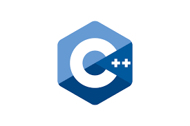

C++

Pada 1979, Bjarne Stroustrup, ilmuwan komputer Denmark, mulai mengembangkan "C dengan Kelas," yang kemudian menjadi C++, terinspirasi oleh pengalamannya dalam pemrograman untuk tesis PhD-nya. Ia menemukan bahwa Simula memiliki fitur yang berguna untuk pengembangan perangkat lunak besar, tetapi terlalu lambat untuk penggunaan praktis, sementara BCPL terlalu rendah levelnya untuk kebutuhan tersebut. Saat bekerja di AT&T Bell Labs, Stroustrup menghadapi tantangan dalam menganalisis kernel UNIX terkait komputasi terdistribusi, dan dengan pengalaman PhD-nya, ia berusaha meningkatkan bahasa C dengan menambahkan fitur seperti Simula.
Contoh Kode C++
#include
using namespace std;
int main() {
// Menampilkan pesan Hello, World!
cout << "Hello, World!" << endl;
return 0;
}
Output:
PELOPOR

| Informasi | Detail |
|---|---|
| Nama | Bjarne Stroustrup |
| Lahir | 30 Desember 1950 (umur 74) Aarhus, Denmark |
| Pendidikan | Universitas Aarhus (Cand.scient.) dan Universitas Cambridge (PhD) |
| Penghargaan |
Penghargaan Grace Murray Hopper (1993), Rekan ACM (1994), Rekan IEEE (1994), Anggota NAE (2004), Penghargaan William Procter untuk Prestasi Ilmiah (2005), Penghargaan Keunggulan Dr. Dobb (2008), Penghargaan Dahl–Nygaard (2015), Rekan CHM (2015), Medali Faraday IET (2017), Penghargaan Charles Stark Draper (2018), Penghargaan Pelopor Komputer (2018), Medali John Scott (2018) |
| Karya terkenal | Bahasa C++ |